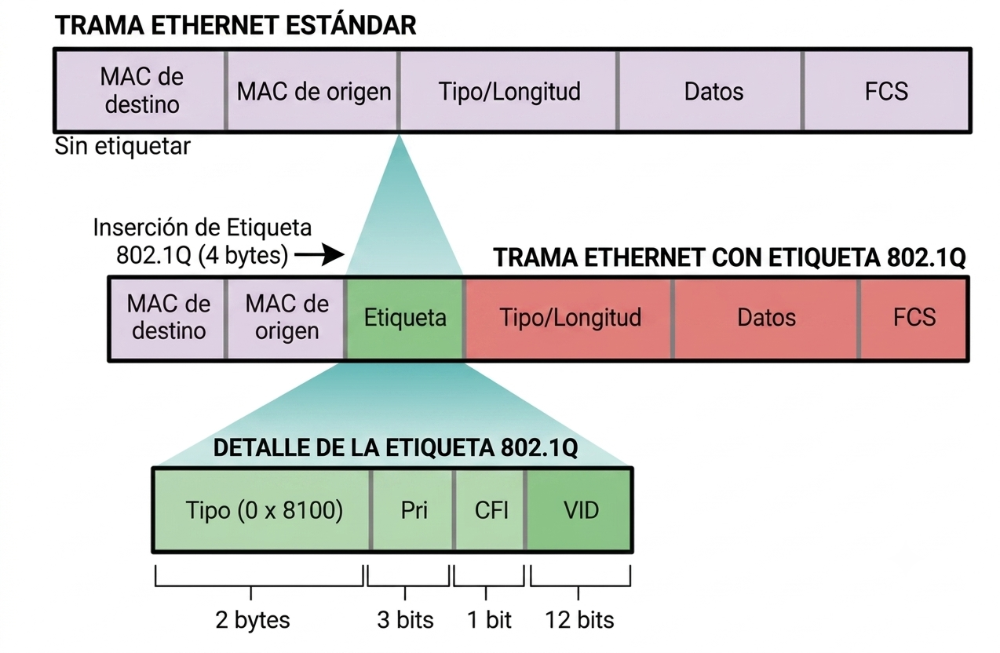

← Volver a principal
Clase IV - Objetivos
Comprender el concepto y funcionamiento de las VLAN.
Comprender el funcionamiento de los puertos Access y Trunk y el concepto de VLAN nativa.
Comprender el etiquetado de tramas mediante IEEE 802.1Q.
Configurar VLAN en switches Cisco y HP.
1. Trabajo Práctico N°4
Ver consigna TP N°4
2. Redes LAN Virtuales (VLAN)
1. VLANs
¿Qué es una VLAN?
¿Qué problema puede resolver la utilización de VLAN?
¿Qué es un dominio de broadcast?
¿Todos los dispositivos conectados a un switch reciben necesariamente los mismos mensajes broadcast?
Si tenemos tres VLAN diferentes, ¿cuántos dominios de broadcast tenemos?
¿Qué ventaja aporta dividir una red en diferentes dominios de broadcast?
2. Puertos Access
¿Qué es un puerto Access?
¿Cuántas VLAN puede transportar un puerto configurado como Access?
¿Qué tipo de dispositivos se conectan normalmente a un puerto Access?
Si conectamos una PC a un puerto Access configurado en VLAN 10, ¿a qué VLAN pertenece esa PC?
¿Puede comunicarse con otra PC conectada a un puerto Access perteneciente a VLAN 20?
¿Pueden comunicarse directamente dos dispositivos pertenecientes a la misma VLAN?
¿Pueden comunicarse directamente dispositivos de VLAN diferentes?
¿Qué sucede si dos dispositivos tienen direcciones IP pertenecientes a la misma red, pero están en VLAN diferentes?
¿Qué elemento está produciendo la separación: la dirección IP o la VLAN?
¿Qué necesitaríamos incorporar para permitir la comunicación entre VLAN diferentes?
3. Puertos Trunk
¿Qué problema aparece cuando una misma VLAN existe en varios switches?
¿Podríamos utilizar un cable independiente para cada VLAN entre dos switches?
¿Qué es un enlace Trunk?
¿Cuántas VLAN puede transportar un enlace Trunk?
¿Para qué se utiliza normalmente un puerto Trunk?
¿Qué diferencia principal existe entre un puerto Access y un puerto Trunk?
4. VLAN nativa
¿Qué es una VLAN nativa?
¿Qué tipo de tráfico circula por la VLAN nativa en un enlace Trunk?
¿Qué significa que una trama viaje sin etiqueta?
¿Cuál es la VLAN nativa predeterminada en muchos switches Cisco/HP?
¿Es recomendable utilizar la VLAN 1 como VLAN nativa en una red real?
¿Qué problemas podrían aparecer si los extremos de un enlace Trunk tienen configurada una VLAN nativa diferente?
3. VLANs: un poco de Teoría
1. IEEE 802.1Q
El estándar IEEE 802.1Q agrega una etiqueta de
4 bytes a la trama Ethernet original. Esta etiqueta permite indicar,
entre otros datos, el identificador de la VLAN a la que pertenece la trama.
De esta forma, un mismo enlace físico configurado como
Trunk puede transportar simultáneamente tráfico de diferentes
VLAN.
Una trama Ethernet tradicional no contiene información sobre la VLAN a la que
pertenece:

Pero al utilizar IEEE 802.1Q, se incorpora una etiqueta VLAN:
2. Campos de la etiqueta IEEE 802.1Q
La etiqueta IEEE 802.1Q tiene un tamaño total de 4 bytes y
está formada por varios campos:
-
TPID (Tag Protocol Identifier):
ocupa 2 bytes e identifica que la trama contiene una etiqueta IEEE 802.1Q.
En Ethernet normalmente utiliza el valor hexadecimal
0x8100.
-
Prioridad (PCP):
ocupa 3 bits y permite indicar un nivel de prioridad para el tráfico.
-
CFI / DEI:
ocupa 1 bit. Originalmente estaba relacionado con la compatibilidad entre
diferentes tipos de redes. En implementaciones actuales puede utilizarse para
indicar la posibilidad de descartar una trama.
-
VLAN ID (VID):
ocupa 12 bits e identifica la VLAN a la que pertenece la trama.
El campo más importante para el funcionamiento de las VLAN es el
VLAN ID, ya que permite al switch identificar a qué VLAN
pertenece cada trama.
3. Access y Trunk
-
Un puerto Access pertenece normalmente a una sola VLAN y se
utiliza para conectar dispositivos finales. Las tramas que llegan desde estos
dispositivos normalmente no incluyen una etiqueta VLAN.
-
Un puerto Trunk permite transportar tráfico de múltiples VLAN
por un mismo enlace físico. Para identificar a qué VLAN pertenece cada trama
se utiliza normalmente el etiquetado IEEE 802.1Q.
4. Configuración de VLANs en un Switch
En esta segunda parte de la clase trabajaremos con un Switch HP 1910/1920 real, aplicando los conceptos vistos para resolver el Trabajo Práctico 4.
Crear VLANs
Mostrar comandos avanzados y entrar al modo configuración
<HP> _cmdline-mode on
<HP> system-view
[HP]
Crear las VLAN
[HP] vlan 10
[HP-vlan10] name ADMIN
[HP-vlan10] quit
[HP] vlan 20
[HP-vlan20] name ALUMNOS
[HP-vlan20] quit
Configurar los puertos ACCESS
[HP] interface Ethernet 1/0/10
[HP-Ethernet1/0/10] port link-type access
[HP-Ethernet1/0/10] port access vlan 10
[HP-Ethernet1/0/10] quit
[HP] interface Ethernet 1/0/20
[HP-Ethernet1/0/20] port link-type access
[HP-Ethernet1/0/20] port access vlan 20
[HP-Ethernet1/0/20] quit
Configurar los puertos TRUNKS
[HP] interface Ethernet 1/0/24
[HP-Ethernet1/0/1] port link-type trunk
[HP-Ethernet1/0/1] port trunk permit vlan 10 20
[HP-Ethernet1/0/1] quit
Verificación
Ver todas las VLANs:
<HP> display vlan all
Ver una VLAN específica:
<HP> display vlan 10
Ver la configuración completa:
<HP> display current-configuration
Ver configuración por interfaz:
<HP> display interface brief
Resumen de la clase
En esta clase aprendimos qué son las VLAN (Virtual LAN) y cómo permiten dividir una red física en diferentes redes lógicas.
Vimos que cada VLAN representa un dominio de broadcast independiente, permitiendo separar dispositivos y organizar mejor una red, incluso cuando se encuentran conectados al mismo switch.
También analizamos la diferencia entre los puertos Access y Trunk. Los puertos Access se utilizan normalmente para conectar dispositivos finales y pertenecen a una única VLAN, mientras que los enlaces Trunk permiten transportar el tráfico de múltiples VLAN a través de un mismo enlace físico.
Para identificar el tráfico de las diferentes VLAN en un enlace Trunk, estudiamos el estándar IEEE 802.1Q y la etiqueta que incorpora a las tramas Ethernet.
Finalmente, aplicamos estos conceptos en un switch real, creando VLAN, configurando puertos Access y Trunk y utilizando diferentes comandos para verificar la configuración realizada.
Con estos conocimientos ya podemos comenzar a diseñar y configurar redes segmentadas mediante VLAN, aplicando los conceptos vistos para resolver el Trabajo Práctico N°4.
← Volver al inicio